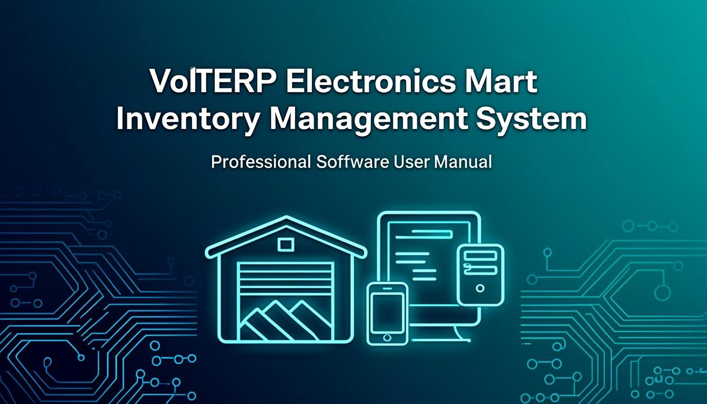

VoltERP ব্যবহারকারী গাইড
ইলেকট্রনিক্স মার্ট ইনভেন্টরি ম্যানেজমেন্ট সিস্টেম
ব্যবসার সম্পূর্ণ পরিচালনা ব্যবস্থা — ক্রয়, বিক্রয়, ইনভেন্টরি, হিসাব, কর্মচারী ও রিপোর্টিং
সম্পূর্ণ বাংলা নির্দেশিকা ২০২৫
বিনিয়োগ মডিউলটি আপনার ব্যবসার আর্থিক ভিত্তি পরিচালনার জন্য ব্যবহৃত হয়। এখানে আপনি বিনিয়োগের খাত বা শ্রেণি তৈরি করতে পারবেন, প্রতিটি বিনিয়োগের লেনদেন রেকর্ড করতে পারবেন এবং সম্পূর্ণ বিনিয়োগ তথ্য ট্র্যাক করতে পারবেন। শুধুমাত্র অ্যাডমিন ও ম্যানেজার রোলের ব্যবহারকারীরা এই মডিউল ব্যবহার করতে পারবেন।
ইনভেস্টমেন্ট হেডস (Investment Heads)
ইনভেস্টমেন্ট হেড হলো বিনিয়োগের শ্রেণি বা খাত — এটি হিসাববিজ্ঞানের লেজার অ্যাকাউন্টের মতো কাজ করে। আপনার ব্যবসার সমস্ত আর্থিক সম্পদ ও দায় এই হেডগুলোর অধীনে শ্রেণিবদ্ধ থাকে। প্রতিটি হেডের একটি স্বয়ংক্রিয়ভাবে তৈরি কোড (যেমন: INVH-00001), নাম, ধরন, উদ্বোধনী ব্যালেন্স এবং সক্রিয় অবস্থা থাকে। হেডের ধরন নির্বাচন করার সময় আপনি Fixed Asset, Current Asset, Liability, PF, FDR বা Security এর মধ্যে বেছে নিতে পারবেন।
ব্যবহার পদ্ধতি
- সাইডবার থেকে Investment মেনুতে ক্লিক করুন, তারপর Investment Heads নির্বাচন করুন
- টেবিলের উপরে ডানদিকে "+ Add New" বাটনে ক্লিক করুন
- ফর্মে নাম (আবশ্যক) লিখুন — যেমন: "প্রধান অফিস ভবন", "ব্যাংক এফডিআর"
- বিবরণ (ঐচ্ছিক) লিখুন — হেড সম্পর্কে নোট বা মন্তব্য
- ধরন (আবশ্যক) নির্বাচন করুন — Fixed Asset, Current Asset, Liability, PF, FDR বা Security
- উদ্বোধনী ব্যালেন্স পরিমাণ টাকা লিখুন এবং উদ্বোধনী ধরন নির্বাচন করুন — Dr (ডেবিট) বা Cr (ক্রেডিট)
- সক্রিয় চেকবক্স নিশ্চিত করুন (ডিফল্টভাবে চালু থাকে)
- Save বাটনে ক্লিক করুন — কোড স্বয়ংক্রিয়ভাবে তৈরি হবে
কোড ফিল্ড (INVH-XXXXX) সিস্টেম দ্বারা স্বয়ংক্রিয়ভাবে তৈরি হয়, আপনাকে ম্যানুয়ালি টাইপ করতে হবে না। নতুন হেড তৈরির পর কোড স্বয়ংক্রিয়ভাবে দেখা যাবে।
সম্পাদনা ও অপসারণ
- যেকোনো সারির ডানপাশে পেন্সিল আইকন (Edit) এ ক্লিক করুন — ফর্ম পূর্বের তথ্য সহ খুলবে
- প্রয়োজনীয় ক্ষেত্র পরিবর্তন করে Save ক্লিক করুন
- অপসারণ করতে ট্র্যাশ আইকন (Delete) এ ক্লিক করুন
- নিশ্চিতকরণ ডায়ালগে Confirm ক্লিক করুন
যদি কোনো হেডের লেনদেন লক করা মাসে থাকে, তবে অপসারণ ব্লক করা হবে। প্রথমে সেই মাসের পিরিয়ড ক্লোজ আনলক করুন, তারপর অপসারণ করুন।
রপ্তানি ও আমদানি
- PDF রপ্তানি: PDF আইকনে ক্লিক করলে ল্যান্ডস্কেপ A4 পিডিএফ ডাউনলোড হবে — কর্পোরেট হেডার, বিকল্প সারি রং এবং পৃষ্ঠা নম্বর সহ
- CSV রপ্তানি: CSV আইকনে ক্লিক করলে UTF-8 BOM এনকোডেড CSV ফাইল ডাউনলোড হবে — এক্সেলে টাকা চিহ্ন (৳) সঠিকভাবে দেখাবে
- CSV আমদানি: আপলোড আইকনে ক্লিক করে CSV ফাইল আপলোড করুন — সিস্টেম স্বয়ংক্রিয়ভাবে যাচাই করবে এবং সফল সারিগুলো যুক্ত করবে
| ক্ষেত্র |
বিবরণ |
আবশ্যক? |
| কোড | স্বয়ংক্রিয়ভাবে তৈরি (INVH-XXXXX) | না |
| নাম | হেডের প্রদর্শন নাম | হ্যাঁ |
| বিবরণ | অতিরিক্ত নোট | না |
| ধরন | Fixed Asset / Current Asset / Liability / PF / FDR / Security | হ্যাঁ |
| উদ্বোধনী ব্যালেন্স | প্রারম্ভিক পরিমাণ (৳) | না |
| উদ্বোধনী ধরন | Dr (ডেবিট) বা Cr (ক্রেডিট) | না |
| সক্রিয় | চালু বা বন্ধ | না |
ইনভেস্টমেন্ট (Investment)
ইনভেস্টমেন্ট পেজে প্রতিটি বিনিয়োগের বিস্তারিত লেনদেন রেকর্ড করা হয়। প্রতিটি এন্ট্রি একটি নির্দিষ্ট ইনভেস্টমেন্ট হেডের সাথে সংযুক্ত থাকে। উদাহরণস্বরূপ, "অফিস ভবন" একটি Fixed Asset হেড হলে, সেই ভবনের জন্য নতুন এসি কেনার রেকর্ড এখানে ইনভেস্টমেন্ট এন্ট্রি হিসেবে যুক্ত হবে। প্রতিটি এন্ট্রিতে তারিখ, পরিমাণ, সম্পদ শ্রেণি ও বিবরণ থাকে। সিস্টেম স্বয়ংক্রিয়ভাবে একটি কোড (INV-00001) তৈরি করে।
নতুন বিনিয়োগ এন্ট্রি করুন
- সাইডবার থেকে Investment → Investment ক্লিক করুন
- "+ Add New" বাটনে ক্লিক করুন
- ইনভেস্টমেন্ট হেড (আবশ্যক) ড্রপডাউন থেকে নির্বাচন করুন — এই তালিকা Investment Heads পেজ থেকে আসে
- তারিখ (আবশ্যক) নির্বাচন করুন — লেনদেনের তারিখ
- পরিমাণ (আবশ্যক) লিখুন — টাকার পরিমাণ
- সম্পদ শ্রেণি নির্বাচন করুন — Fixed (দীর্ঘমেয়াদী সম্পদ) অথবা Current (স্বল্পমেয়াদী/তরল সম্পদ)
- বিবরণ লিখুন — লেনদেন সম্পর্কে মন্তব্য বা নোট
- সক্রিয় চেকবক্স নিশ্চিত করুন এবং Save ক্লিক করুন
সম্পদ শ্রেণি "Fixed" নির্বাচন করলে সেই এন্ট্রি স্বয়ংক্রিয়ভাবে Fixed Asset পেজেও দেখা যাবে। আর "Current" নির্বাচন করলে Current Asset পেজে দেখা যাবে। তাই সঠিক শ্রেণি নির্বাচন করা অত্যন্ত গুরুত্বপূর্ণ।
বিনিয়োগের রিটার্ন বা উত্তোলন
বিনিয়োগ থেকে টাকা উত্তোলন বা রিটার্ন পেলে সেই এন্ট্রিও এই পেজেই করতে হবে। উত্তোলনের ক্ষেত্রে পরিমাণ ঋণাত্মক (নেগেটিভ) হিসেবে লিখুন অথবা বিবরণে "উত্তোলন" উল্লেখ করুন। এতে সামগ্রিক বিনিয়োগ রিপোর্টে নিট পরিমাণ সঠিকভাবে দেখা যাবে।
| ক্ষেত্র |
বিবরণ |
আবশ্যক? |
| কোড | স্বয়ংক্রিয়ভাবে তৈরি (INV-XXXXX) | না |
| ইনভেস্টমেন্ট হেড | যে হেডের অধীনে এন্ট্রি | হ্যাঁ |
| তারিখ | লেনদেনের তারিখ | হ্যাঁ |
| পরিমাণ | টাকার পরিমাণ (৳) | হ্যাঁ |
| সম্পদ শ্রেণি | Fixed বা Current | না |
| বিবরণ | লেনদেন সম্পর্কে নোট | না |
| সক্রিয় | চালু বা বন্ধ | না |
VAT Auditor রোল এই পেজ অ্যাক্সেস করলে সমস্ত পরিমাণ/মূল্য ক্ষেত্রে "N/A (Audit Mode)" দেখাবে। এটি ব্যবসার আর্থিক গোপনীয়তা রক্ষার জন্য।
সম্পত্তি মডিউলে আপনার ব্যবসার সমস্ত সম্পদ — স্থায়ী ও চলতি — পরিচালনা করা হয়। স্থায়ী সম্পদ হলো দীর্ঘমেয়াদী সম্পদ যেমন ভবন, যন্ত্রপাতি, যানবাহন; আর চলতি সম্পদ হলো স্বল্পমেয়াদী তরল সম্পদ যেমন নগদ, ব্যাংক জমা, পাওনাদার। ব্যালেন্স শিটে সম্পদের এই দুই শ্রেণি আলাদাভাবে প্রদর্শিত হয়।
স্থায়ী সম্পদ (Fixed Asset)
স্থায়ী সম্পদ হলো ব্যবসার দীর্ঘমেয়াদী সম্পদ — ভবন, যন্ত্রপাতি, যানবাহন, অফিস সরঞ্জাম ইত্যাদি। এই সম্পদগুলো একাধিক আর্থিক বছর ধরে ব্যবহৃত হয় এবং সময়ের সাথে তাদের মূল্য হ্রাস (Depreciation) পায়। VoltERP সিস্টেমে প্রতিটি স্থায়ী সম্পদ একটি "Fixed Asset" ধরনের ইনভেস্টমেন্ট হেডের সাথে সংযুক্ত থাকে। হ্রাসকৃত মূল্য লেজার এন্ট্রির মাধ্যমে ম্যানুয়ালি রেকর্ড করতে হয়। ব্যালেন্স শিটে স্থায়ী সম্পদের মোট মূল্য "Fixed Assets" বিভাগে প্রদর্শিত হয়।
নতুন স্থায়ী সম্পদ যোগ করুন
- সাইডবার থেকে Investment → Fixed Asset ক্লিক করুন
- "+ Add New" বাটনে ক্লিক করুন
- ইনভেস্টমেন্ট হেড নির্বাচন করুন — অবশ্যই "Fixed Asset" ধরনের হেড নির্বাচন করতে হবে
- তারিখ নির্বাচন করুন — সম্পদ অর্জনের তারিখ
- পরিমাণ লিখুন — সম্পদের ক্রয়মূল্য (৳)
- বিবরণ লিখুন — সম্পদের বিস্তারিত (যেমন: "স্যামসাং স্প্লিট এসি ১.৫ টন")
- সম্পদ শ্রেণি স্বয়ংক্রিয়ভাবে "Fixed" নির্ধারিত থাকবে
- Save ক্লিক করুন — কোড (INV-XXXXX) স্বয়ংক্রিয়ভাবে তৈরি হবে
স্থায়ী সম্পদের হ্রাসকৃত মূল্য (Depreciation) সিস্টেম স্বয়ংক্রিয়ভাবে হিসাব করে না। প্রতি মাসে বা বছরে হ্রাসকৃত মূল্য ম্যানুয়ালি লেজার এন্ট্রির মাধ্যমে রেকর্ড করতে হবে। এতে করে ব্যালেন্স শিটে সম্পদের নিট বই মূল্য সঠিকভাবে প্রতিফলিত হবে।
স্থায়ী সম্পদ পরিচালনার কার্যপ্রবাহ
স্থায়ী সম্পদ জীবনচক্র
- হেড তৈরি: Investment Heads পেজে "Fixed Asset" ধরনের হেড তৈরি করুন
- সম্পদ অর্জন: Fixed Asset পেজে সম্পদের ক্রয় এন্ট্রি করুন
- হ্রাস হিসাব: প্রতি সময়ে লেজারে Depreciation এন্ট্রি করুন
- ব্যালেন্স শিট: নিট বই মূল্য = ক্রয়মূল্য - জমা হ্রাস
- অপসারণ: সম্পদ বিক্রি বা বর্জন করলে তা লেজারে রেকর্ড করুন
| সম্পদের উদাহরণ |
হেড ধরন |
হ্রাসযোগ্য? |
| অফিস ভবন | Fixed Asset | হ্যাঁ |
| যানবাহন (গাড়ি) | Fixed Asset | হ্যাঁ |
| কম্পিউটার ও ল্যাপটপ | Fixed Asset | হ্যাঁ |
| এসি ও অফিস সরঞ্জাম | Fixed Asset | হ্যাঁ |
| আসবাবপত্র | Fixed Asset | হ্যাঁ |
চলতি সম্পদ (Current Asset)
চলতি সম্পদ হলো ব্যবসার স্বল্পমেয়াদী ও তরল সম্পদ — নগদ অর্থ, ব্যাংক জমা, পাওনাদারের টাকা, ইনভেন্টরির মূল্য ইত্যাদি। এই সম্পদগুলো এক আর্থিক বছরের মধ্যে নগদে রূপান্তরিত হওয়ার প্রত্যাশা করা যায়। চলতি সম্পদ ব্যবসার তরলতা (Liquidity) নির্দেশ করে — অর্থাৎ ব্যবসা কতটুকু দ্রুত তার আর্থিক দায় পরিশোধ করতে সক্ষম। ব্যালেন্স শিটে চলতি সম্পদ "Current Assets" বিভাগে প্রদর্শিত হয় এবং তরলতা অনুপাত হিসাবে ব্যবহৃত হয়।
নতুন চলতি সম্পদ যোগ করুন
- সাইডবার থেকে Investment → Current Asset ক্লিক করুন
- "+ Add New" বাটনে ক্লিক করুন
- ইনভেস্টমেন্ট হেড নির্বাচন করুন — অবশ্যই "Current Asset" ধরনের হেড নির্বাচন করতে হবে
- তারিখ নির্বাচন করুন — লেনদেনের তারিখ
- পরিমাণ লিখুন — সম্পদের পরিমাণ (৳)
- বিবরণ লিখুন — সম্পদের বিস্তারিত তথ্য
- সম্পদ শ্রেণি স্বয়ংক্রিয়ভাবে "Current" নির্ধারিত থাকবে
- Save ক্লিক করুন
চলতি সম্পদের পরিমাণ প্রতি মাসে আপডেট করুন। বিশেষত ব্যাংক জমা ও নগদ অর্থের পরিবর্তন সময়মতো রেকর্ড করলে তরলতা অনুপাত সঠিক থাকবে এবং আর্থিক সিদ্ধান্ত নেওয়া সহজ হবে।
| চলতি সম্পদের উদাহরণ |
হেড ধরন |
বৈশিষ্ট্য |
| নগদ অর্থ (Cash) | Current Asset | সবচেয়ে তরল |
| ব্যাংক জমা | Current Asset | দ্রুত উত্তোলনযোগ্য |
| পাওনাদার (Receivables) | Current Asset | ৩০-৯০ দিনে আসবে |
| ইনভেন্টরি মূল্য | Current Asset | বিক্রয়ের মাধ্যমে নগদ |
| ব্যাংক এফডিআর | Current Asset / FDR | মেয়াদ শেষে তরল |
স্থায়ী সম্পদ বনাম চলতি সম্পদ
| বৈশিষ্ট্য |
স্থায়ী সম্পদ (Fixed) |
চলতি সম্পদ (Current) |
| মেয়াদ | একাধিক বছর | এক বছরের কম |
| তরলতা | কম | উচ্চ |
| হ্রাস (Depreciation) | প্রযোজ্য | প্রযোজ্য নয় |
| উদাহরণ | ভবন, গাড়ি, যন্ত্রপাতি | নগদ, ব্যাংক জমা, পাওনাদার |
| ব্যালেন্স শিট অবস্থান | উপরে — Fixed Assets | নিচে — Current Assets |
| রূপান্তর | নগদে রূপান্তর কঠিন | সহজেই নগদে রূপান্তর |
দায় মডিউলে আপনার ব্যবসার সমস্ত ঋণ ও দায় পরিচালনা করা হয়। এখানে আপনি ঋণ গ্রহণ, ঋণ পরিশোধ এবং সমস্ত দায়ের সামগ্রিক রিপোর্ট দেখতে পারবেন। সিস্টেম স্বয়ংক্রিয়ভাবে বকেয়া পরিমাণ হিসাব করে এবং লেজারে সংশ্লিষ্ট এন্ট্রি তৈরি করে। শুধুমাত্র অ্যাডমিন ও ম্যানেজার এই মডিউল ব্যবহার করতে পারবেন।
দায় গ্রহণ (Liability Receive)
দায় গ্রহণ পেজে ব্যবসায় আগত ঋণ বা ঋণসৃষ্টিকারী লেনদেন রেকর্ড করা হয়। যখন আপনার ব্যবসা ব্যাংক থেকে ঋণ গ্রহণ করে, সরবরাহকারীর কাছ থেকে ক্রেডিট পায়, অথবা অন্য কোনো উৎস থেকে অর্থ ধার নেয় — তখন এই পেজে এন্ট্রি করতে হয়। এন্ট্রি করার পর সিস্টেম স্বয়ংক্রিয়ভাবে সেই ইনভেস্টমেন্ট হেডের বকেয়া দায়ের ব্যালেন্স বৃদ্ধি করে এবং জেনারেল লেজারে একটি স্বয়ংক্রিয় এন্ট্রি তৈরি করে: নগদ/ব্যাংক অ্যাকাউন্ট ডেবিট, দায় অ্যাকাউন্ট ক্রেডিট।
নতুন দায় গ্রহণ এন্ট্রি করুন
- সাইডবার থেকে Investment → Liability Receive ক্লিক করুন
- "+ Add New" বাটনে ক্লিক করুন
- ইনভেস্টমেন্ট হেড (আবশ্যক) নির্বাচন করুন — অবশ্যই "Liability" ধরনের হেড হতে হবে
- তারিখ (আবশ্যক) নির্বাচন করুন — টাকা গ্রহণের তারিখ
- পরিমাণ (আবশ্যক) লিখুন — গ্রহণকৃত পরিমাণ (৳)
- পেমেন্ট পদ্ধতি নির্বাচন করুন — নগদ, ব্যাংক ট্রান্সফার, চেক ইত্যাদি
- বিবরণ লিখুন — লেনদেন সম্পর্কে বিস্তারিত নোট
- Save ক্লিক করুন — কোড স্বয়ংক্রিয়ভাবে তৈরি হবে এবং লেজার এন্ট্রি স্বয়ংক্রিয়ভাবে হবে
দায় গ্রহণ এন্ট্রি করলে সিস্টেম স্বয়ংক্রিয়ভাবে জেনারেল লেজারে একটি এন্ট্রি তৈরি করে — নগদ/ব্যাংক অ্যাকাউন্ট ডেবিট (Dr) এবং দায় অ্যাকাউন্ট ক্রেডিট (Cr)। ফলে আপনাকে আলাদাভাবে লেজার এন্ট্রি করতে হবে না।
| ক্ষেত্র |
বিবরণ |
আবশ্যক? |
| ইনভেস্টমেন্ট হেড | Liability ধরনের হেড নির্বাচন | হ্যাঁ |
| তারিখ | টাকা গ্রহণের তারিখ | হ্যাঁ |
| পরিমাণ | গ্রহণকৃত পরিমাণ (৳) | হ্যাঁ |
| পেমেন্ট পদ্ধতি | নগদ / ব্যাংক / চেক | না |
| বিবরণ | লেনদেন নোট | না |
দায় পরিশোধ (Liability Pay)
দায় পরিশোধ পেজে ব্যবসার ঋণ পরিশোধের লেনদেন রেকর্ড করা হয়। যখন আপনি ব্যাংক ঋণের কিস্তি পরিশোধ করেন, সরবরাহকারীকে বকেয়া পরিশোধ করেন, অথবা অন্য কোনো দায় পরিশোধ করেন — তখন এই পেজে এন্ট্রি করতে হয়। এন্ট্রি করার পর সিস্টেম স্বয়ংক্রিয়ভাবে সেই ইনভেস্টমেন্ট হেডের বকেয়া দায়ের ব্যালেন্স হ্রাস করে এবং জেনারেল লেজারে স্বয়ংক্রিয় এন্ট্রি তৈরি করে: দায় অ্যাকাউন্ট ডেবিট, নগদ/ব্যাংক অ্যাকাউন্ট ক্রেডিট। আপডেটেড ব্যালেন্স তাৎক্ষণিকভাবে Liability Report এ প্রতিফলিত হয়।
নতুন দায় পরিশোধ এন্ট্রি করুন
- সাইডবার থেকে Investment → Liability Pay ক্লিক করুন
- "+ Add New" বাটনে ক্লিক করুন
- ইনভেস্টমেন্ট হেড (আবশ্যক) নির্বাচন করুন — অবশ্যই "Liability" ধরনের হেড হতে হবে
- তারিখ (আবশ্যক) নির্বাচন করুন — পরিশোধের তারিখ
- পরিমাণ (আবশ্যক) লিখুন — পরিশোধকৃত পরিমাণ (৳)
- পেমেন্ট পদ্ধতি নির্বাচন করুন — নগদ, ব্যাংক ট্রান্সফার, চেক
- বিবরণ লিখুন — পরিশোধ সম্পর্কে নোট (যেমন: "মার্চ মাসের কিস্তি")
- Save ক্লিক করুন — কোড ও লেজার এন্ট্রি স্বয়ংক্রিয়ভাবে হবে
দায় পরিশোধ এন্ট্রি করলে সিস্টেম স্বয়ংক্রিয়ভাবে জেনারেল লেজারে একটি এন্ট্রি তৈরি করে — দায় অ্যাকাউন্ট ডেবিট (Dr) এবং নগদ/ব্যাংক অ্যাকাউন্ট ক্রেডিট (Cr)। বকেয়া ব্যালেন্স তাৎক্ষণিকভাবে আপডেট হবে।
দায় গ্রহণ ও পরিশোধের কার্যপ্রবাহ
দায় পরিচালনার সম্পূর্ণ প্রক্রিয়া
- হেড তৈরি: Investment Heads পেজে "Liability" ধরনের হেড তৈরি করুন (যেমন: "ব্যাংক ঋণ", "সরবরাহকারী ক্রেডিট")
- ঋণ গ্রহণ: Liability Receive পেজে ঋণের পরিমাণ এন্ট্রি করুন — দায়ের ব্যালেন্স বৃদ্ধি পাবে
- কিস্তি পরিশোধ: Liability Pay পেজে প্রতিটি কিস্তি এন্ট্রি করুন — দায়ের ব্যালেন্স হ্রাস পাবে
- রিপোর্ট দেখুন: Liability Report থেকে বকেয়া পরিমাণ, পরিশোধিত পরিমাণ ও সর্বশেষ লেনদেনের তারিখ দেখুন
- সম্পূর্ণ পরিশোধ: যখন সমস্ত দায় পরিশোধ হয়ে যাবে, Liability Report এ বকেয়া শূন্য দেখাবে
| ক্ষেত্র |
বিবরণ |
আবশ্যক? |
| ইনভেস্টমেন্ট হেড | Liability ধরনের হেড নির্বাচন | হ্যাঁ |
| তারিখ | পরিশোধের তারিখ | হ্যাঁ |
| পরিমাণ | পরিশোধকৃত পরিমাণ (৳) | হ্যাঁ |
| পেমেন্ট পদ্ধতি | নগদ / ব্যাংক / চেক | না |
| বিবরণ | পরিশোধ সম্পর্কে নোট | না |
দায় রিপোর্ট (Liability Report)
দায় রিপোর্ট পেজে সমস্ত দায়ের সামগ্রিক চিত্র দেখতে পারবেন। এটি একটি শুধুমাত্র পাঠযোগ্য (Read-only) রিপোর্ট — এখানে কোনো তথ্য সম্পাদনা বা যোগ করা যায় না। রিপোর্টে প্রতিটি দায় হেডের মোট গ্রহণকৃত পরিমাণ, মোট পরিশোধিত পরিমাণ, বকেয়া ব্যালেন্স এবং সর্বশেষ লেনদেনের তারিখ দেখা যায়। বকেয়া ব্যালেন্স স্বয়ংক্রিয়ভাবে গণনা করা হয়: মোট গ্রহণ − মোট পরিশোধ = বকেয়া। এই রিপোর্ট থেকে PDF ও CSV রপ্তানি করা যায়।
রিপোর্ট দেখুন ও রপ্তানি করুন
- সাইডবার থেকে Investment → Liability Report ক্লিক করুন
- সামগ্রিক টেবিলে প্রতিটি দায় হেডের তথ্য দেখুন
- PDF রপ্তানি: PDF আইকনে ক্লিক করুন — ল্যান্ডস্কেপ A4 পিডিএফ ডাউনলোড হবে, কর্পোরেট হেডার, বিকল্প সারি রং ও পৃষ্ঠা নম্বর সহ
- CSV রপ্তানি: CSV আইকনে ক্লিক করুন — UTF-8 BOM এনকোডেড CSV ফাইল ডাউনলোড হবে, এক্সেলে সরাসরি খোলা যাবে
| রিপোর্ট কলাম |
বিবরণ |
| ইনভেস্টমেন্ট হেড | দায়ের নাম (যেমন: "ব্যাংক ঋণ - সিটি ব্যাংক") |
| মোট গ্রহণ (Total Received) | সেই হেডে সমস্ত "received" লেনদেনের সমষ্টি |
| মোট পরিশোধ (Total Paid) | সেই হেডে সমস্ত "pay" লেনদেনের সমষ্টি |
| বকেয়া ব্যালেন্স (Outstanding) | মোট গ্রহণ − মোট পরিশোধ = অবশিষ্ট ঋণ |
| সর্বশেষ লেনদেন | সাম্প্রতিক লেনদেনের তারিখ |
VAT Auditor রোল এই রিপোর্ট দেখলে সমস্ত আর্থিক পরিমাণ "N/A (Audit Mode)" হিসেবে দেখাবে। এটি ব্যবসার আর্থিক গোপনীয়তা রক্ষার জন্য ডিজাইন করা হয়েছে।
এই রিপোর্ট শুধুমাত্র পাঠযোগ্য — এখানে কোনো তথ্য পরিবর্তন করা যাবে না। তথ্য পরিবর্তন করতে হলে Liability Receive বা Liability Pay পেজে যান। পিরিয়ড ক্লোজের কারণে এই রিপোর্ট দেখতে কোনো বিধিনিষেধ নেই।
দায় মডিউলের সামগ্রিক কার্যপ্রবাহ
| ধাপ |
পেজ |
কাজ |
লেজার প্রভাব |
| ১ | Investment Heads | Liability হেড তৈরি | — |
| ২ | Liability Receive | ঋণ গ্রহণ এন্ট্রি | নগদ/ব্যাংক Dr → দায় Cr |
| ৩ | Liability Pay | কিস্তি/পরিশোধ এন্ট্রি | দায় Dr → নগদ/ব্যাংক Cr |
| ৪ | Liability Report | বকেয়া ব্যালেন্স দেখুন | — (শুধু পাঠযোগ্য) |